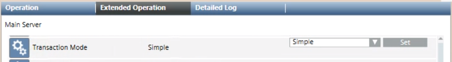
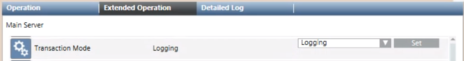

Switching the Transaction Mode for SI400 Sintony
To speed up configuration, set the transaction mode to simple before starting any engineering procedures that create a large number of System Browser objects. When the configuration is complete, set the transaction mode back to logging to resume normal operational monitoring.
Set the Transaction Mode to Simple to Speed Configuration Tasks
- In System Browser, select Management View.
- Select Project > Management System > Servers > Main Server.
- In the Extended Operation tab, select the Transaction Mode property.
- In the drop-down list, select Simple.
- Click Set.

Set the Transaction Mode to Logging when Configuration is Complete
- In System Browser, select Management View.
- Select Project > Management System > Servers > Main Server.
- In the Extended Operation tab, select the Transaction Mode property.
- In the drop-down list, select Logging.
- Click Set.
